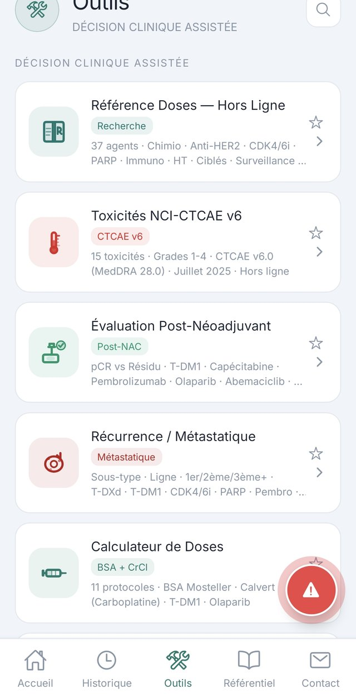
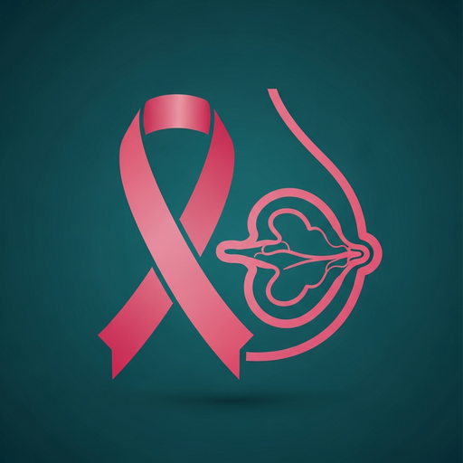
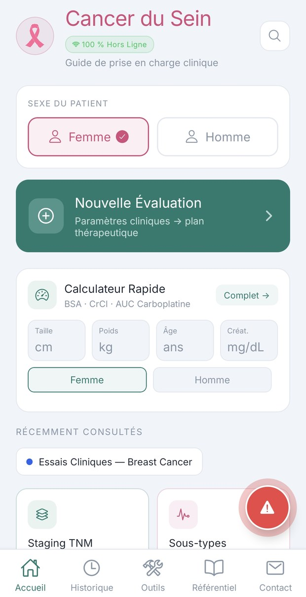
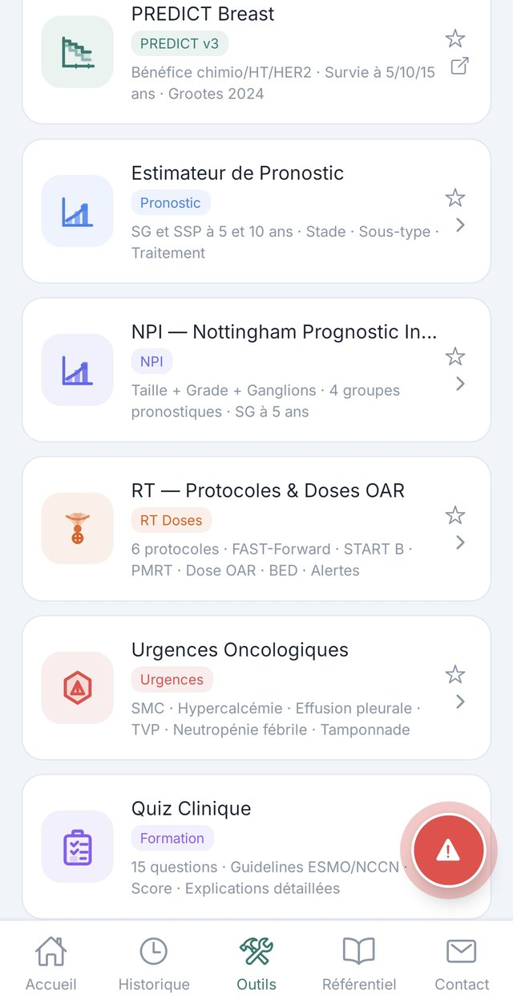
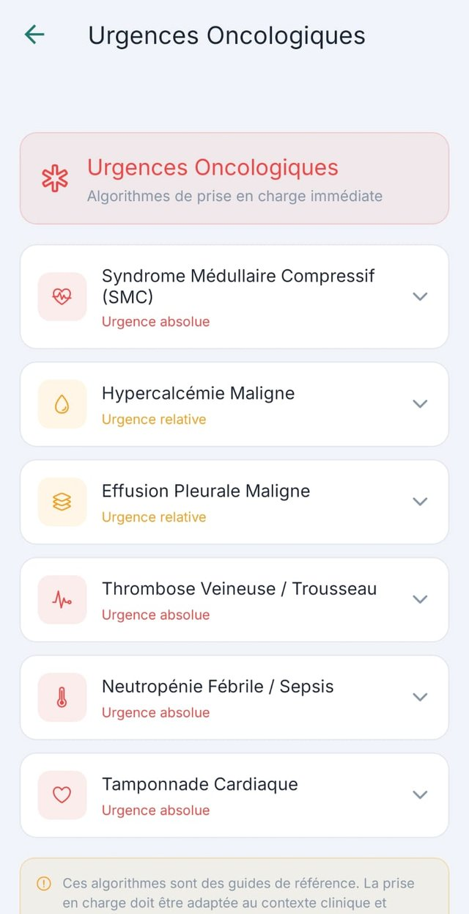
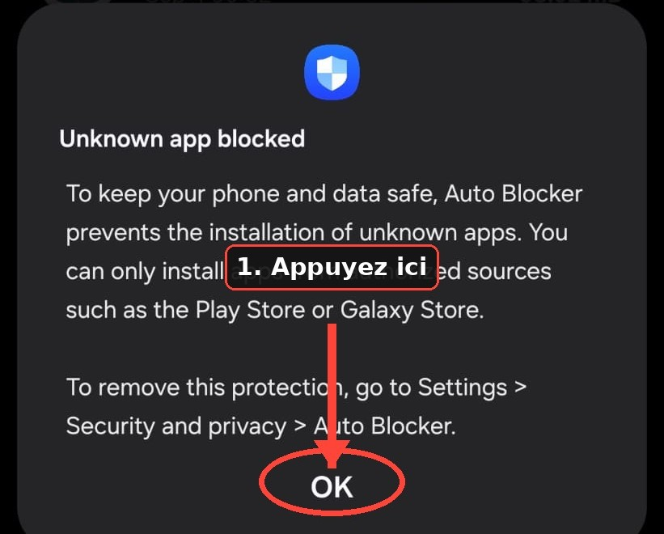
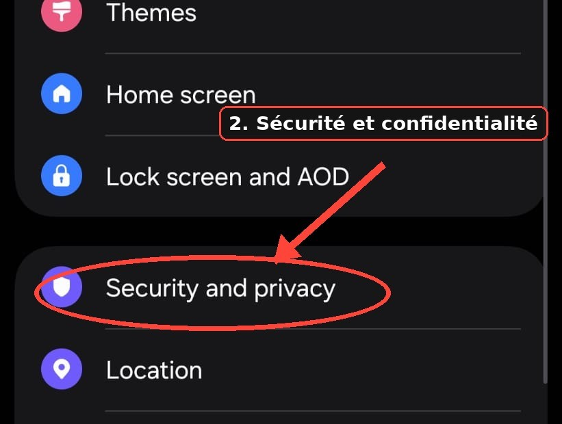
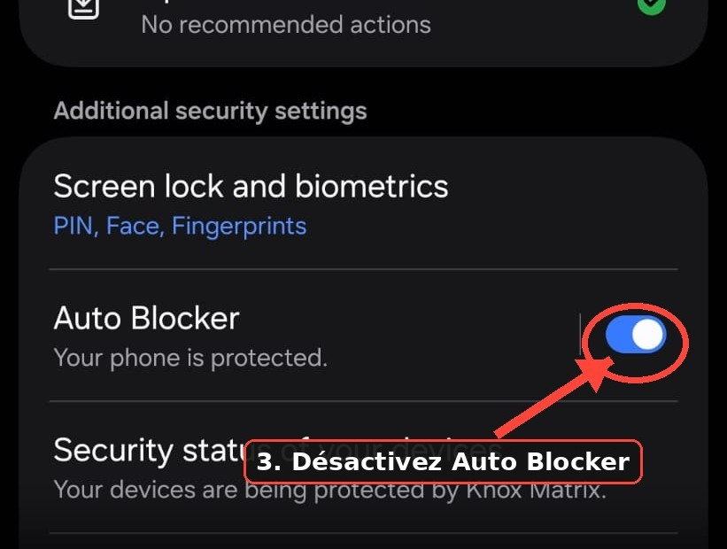

Outils cliniques
Des calculateurs, pas des tableaux
BSA, clairance de la créatinine, AUC Carboplatine, TNM selon AJCC 2018, sous-types moléculaires — trente-sept agents référencés.

OncoSeinRecommandations NCCN et ESMO, stadification TNM, PREDICT v3 et algorithmes d'urgence oncologique — dans une application qui fonctionne sans connexion.

Conçue pour la RCP, le lit du patient et la formation — le contenu suit le raisonnement clinique, pas l'ordre d'un manuel.

BSA, clairance de la créatinine, AUC Carboplatine, TNM selon AJCC 2018, sous-types moléculaires — trente-sept agents référencés.

Bénéfice attendu de la chimiothérapie, de l'hormonothérapie et de l'anti-HER2, survie à 5, 10 et 15 ans — modèle publié par Grootes et al., 2024.

Compression médullaire, hypercalcémie, neutropénie fébrile, tamponnade — classées par degré d'urgence, avec la conduite à tenir.
OncoSein ne collecte aucune donnée. Rien de ce que vous saisissez ne quitte votre téléphone : aucun compte, aucune statistique d'usage, aucune publicité.
OncoSein n'est pas encore sur le Play Store. Sur Samsung, un écran de sécurité s'affiche à la première installation — voici où appuyer.

1. Ouvrez le fichier téléchargé. Un avertissement apparaît — appuyez sur OK.

2. Dans Paramètres, ouvrez Security and privacy (Sécurité et confidentialité).

3. Désactivez Auto Blocker — c'est lui qui bloquait l'installation.